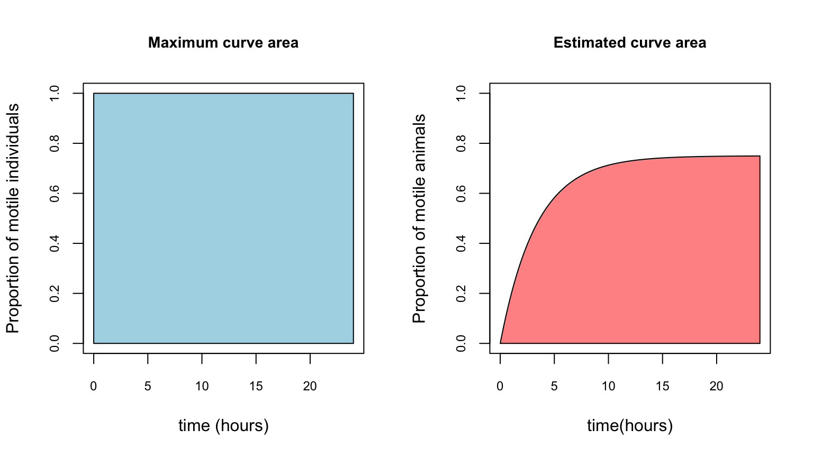

Anhydrobiosis Index
Matteo Vecchi
2022-04-30
Last updated: 2022-04-30
Checks: 6 1
Knit directory: Anhydrobiosis_index/
This reproducible R Markdown analysis was created with workflowr (version 1.7.0). The Checks tab describes the reproducibility checks that were applied when the results were created. The Past versions tab lists the development history.
The R Markdown file has unstaged changes. To know which version of
the R Markdown file created these results, you’ll want to first commit
it to the Git repo. If you’re still working on the analysis, you can
ignore this warning. When you’re finished, you can run
wflow_publish to commit the R Markdown file and build the
HTML.
Great job! The global environment was empty. Objects defined in the global environment can affect the analysis in your R Markdown file in unknown ways. For reproduciblity it’s best to always run the code in an empty environment.
The command set.seed(20220411) was run prior to running
the code in the R Markdown file. Setting a seed ensures that any results
that rely on randomness, e.g. subsampling or permutations, are
reproducible.
Great job! Recording the operating system, R version, and package versions is critical for reproducibility.
Nice! There were no cached chunks for this analysis, so you can be confident that you successfully produced the results during this run.
Great job! Using relative paths to the files within your workflowr project makes it easier to run your code on other machines.
Great! You are using Git for version control. Tracking code development and connecting the code version to the results is critical for reproducibility.
The results in this page were generated with repository version 3df0280. See the Past versions tab to see a history of the changes made to the R Markdown and HTML files.
Note that you need to be careful to ensure that all relevant files for
the analysis have been committed to Git prior to generating the results
(you can use wflow_publish or
wflow_git_commit). workflowr only checks the R Markdown
file, but you know if there are other scripts or data files that it
depends on. Below is the status of the Git repository when the results
were generated:
Ignored files:
Ignored: .DS_Store
Ignored: .Rhistory
Ignored: .Rproj.user/
Ignored: analysis/.DS_Store
Ignored: code/.DS_Store
Ignored: code/.Rhistory
Ignored: data/.DS_Store
Unstaged changes:
Modified: analysis/1.Anhydrobiosis_Index.Rmd
Modified: analysis/2.Milnesium_anhydrobiosis.Rmd
Modified: analysis/bibliography.bib
Modified: code/AhI_functions.R
Modified: output/model_Milnesium.rds
Deleted: temporary_code.R
Note that any generated files, e.g. HTML, png, CSS, etc., are not included in this status report because it is ok for generated content to have uncommitted changes.
There are no past versions. Publish this analysis with
wflow_publish() to start tracking its development.
library(tidyverse)Modelling recovery from anhydrobiosis with an exponential distribution
Most of the studies involving the quantification of anhydrobiotic
performances in tardigrades measure the proportion of moving animals in
different times after the beginning of rehydration. The time to recovery
of individuals after the beginning the rehydration can be described by
an exponential distribution, that is the probability
distribution of the time between events that occur continuously and
independently at a constant average rate.
The probability distribution funtion (PDF) of the exponential
distribution function models the time to event, however usually this
information is not available as it would require to constantly observe
the individuals and record the exact moment when they start moving. It
is more common instead to check the individuals at fixed time points and
record how many of them are moving. The proportion if individuals that
recovered their motility can be instead modeled with the cumulative
distribution function (CDF) of the exponential distribution.
x = seq(0,5,0.01)
lambda = 1
y_PDFexp = lambda*exp(-lambda*x)
y_CDFexp = 1 - exp(-lambda*x)
par(mfrow=c(1,2))
plot(x=x, y=y_PDFexp, type="l", xlab="x",ylab="P(x)", main = "Probability density function (PDF)", cex.axis=0.75, cex.main=0.9)
plot(x=x, y=y_CDFexp, type="l", xlab="x",ylab="P(X <= x)", main = "Cumulative distribution function (CDF)", cex.axis=0.75, cex.main=0.9)
| Version | Author | Date |
|---|---|---|
| 7675a6f | Matteo Vecchi | 2022-04-28 |
The PDF (image above - left) describes how much time do we have to wait to observe an individual starting to move after the rehydration. The CDF (image above - right) describes instead what proportion of animals already started moving at a given time x. From now on we will discuss only about the CDF as it is more fit to the data that is usually produce in the tardigrade anhydrobiosis experiments.
The exponential distribution is only describe by one parameter \(\lambda\) (lambda), often called the rate parameter and can take any positive value. \(\frac{1}{\lambda}\) is the average time that we have to wait to observe the event of interest. The CDF of an exponential distribution has the following formula (where x represents time): \[ P(x \le X) = 1 - e^{-\lambda*x}\]
par(mfrow=c(1,3))
x = seq(0,5,0.01)
y = 1 - exp(-0.25*x)
plot(x=x, y=y, type="l", xlab="x",ylab="P(X <= x)", main = "CDF, lambda = 0.25", cex.axis=0.75, cex.main=0.9)
y = 1 - exp(-1*x)
plot(x=x, y=y, type="l", xlab="x",ylab="P(X <= x)", main = "CDF, lambda = 1.0", cex.axis=0.75, cex.main=0.9)
y = 1 - exp(-1.75*x)
plot(x=x, y=y, type="l", xlab="x",ylab="P(X <= x)", main = "CDF, lambda = 1.75", cex.axis=0.75, cex.main=0.9)
| Version | Author | Date |
|---|---|---|
| 7675a6f | Matteo Vecchi | 2022-04-28 |
With smaller \(\lambda\) values, the curve grows slower (the individuals takes longer on average to recover), whereas with bigger \(\lambda\) values, the curve grows faster.
The exponential distribution also assumes that at one point in time, all individuals will recover. This is not realistic as the anhydrobiotic survival can be lower than 100%. This can be easily accommodated by multiplying by the final survival. \[ p = P(Survival) * (1 - e^{-\lambda*x})\]
par(mfrow=c(1,3))
x = seq(0,5,0.01)
y = (1 - exp(-1*x))*1
plot(x=x, y=y, type="l", xlab="x",ylab="p", main = "CDF, lambda = , P(survival) = 1", cex.axis=0.75, cex.main=0.9, ylim=c(0,1))
y = (1 - exp(-1*x))*0.75
plot(x=x, y=y, type="l", xlab="x",ylab="p", main = "CDF, lambda = , P(survival) = 0.75", cex.axis=0.75, cex.main=0.9, ylim=c(0,1))
y = (1 - exp(-1*x))*0.5
plot(x=x, y=y, type="l", xlab="x",ylab="p", main = "CDF, lambda = , P(survival) = 0.50", cex.axis=0.75, cex.main=0.9, ylim=c(0,1))
| Version | Author | Date |
|---|---|---|
| 7675a6f | Matteo Vecchi | 2022-04-28 |
By changing the two parameters (\(\lambda\) and p) of this modified CDF of exponential distribution, we can describe accurately how does tardigrades start recovering after anhydrobiosis.
If we measured the proportion of motile animals at 1,2,4,12,and 24 hours after the start of the rehydration (red dots), we would fit all those single points to a unique line (black line).
x = seq(0,25,0.1)
y = (1 - exp(-0.3*x))*0.75
plot(x=x, y=y, type="l", xlab="time(hours)",ylab="Proportion of motile animals", main = "Fitting of anhydrobiosis recovery data",
cex.axis=0.75, cex.main=0.9, ylim=c(0,1))
points(x=c(1,2,4,12,24), y=c(0.22,0.30,0.50,0.77,0.74), col="red", pch=19)
| Version | Author | Date |
|---|---|---|
| 7675a6f | Matteo Vecchi | 2022-04-28 |
If we fit the line with Bayestan methods, we will obtain not one single line, but a posterior distribution (grey lines) of equally probable lines (of which we can calculate the average one - black line).
x = seq(0,25,0.1)
y_true = (1 - exp(-0.3*x))*0.75
plot(x=x, y=y_true, type="n", xlab="time(hours)",ylab="Proportion of motile animals", main = "Fitting of anhydrobiosis recovery data",
cex.axis=0.75, cex.main=0.9, ylim=c(0,1))
for(i in 1:100){
y = (1 - exp(-(0.3+rnorm(1,0,0.05))*x))*(0.75+rnorm(1,0,0.05))
lines(x=x, y=y, type="l", col =alpha("grey", 0.5))
}
lines(x=x, y=y_true)
points(x=c(1,2,4,12,24), y=c(0.22,0.30,0.50,0.77,0.74), col="red", pch=19)
| Version | Author | Date |
|---|---|---|
| 7675a6f | Matteo Vecchi | 2022-04-28 |
Reparametrization of CDF exponential function
The \(\lambda\) parameter is not
easy to interpret. I t is possible however, to reparametrize the
function to a new parameter that describe the time needed to reach the
motility of a certain proportion of the surviving animals.
The new parameter (that we will call Qpm), describe
the time needed to reach a certain proportion (pm) proportion
of animals to be motile: \[ \lambda =
\frac{-log(1-pm)}{Q} \] If we set pm = 0.9, and then
Q0.9 is 12, it means that (among the surviving
animals), 90% of them will recover their motility in 12 hours after
rehydration. With pm set to 0.9, and assuming a survival of
100%, the different recovery speed would look like this:
x = seq(0,25,0.1)
plot(x=c(0,25), y=c(0,1), type="n", xlab="time(hours)",ylab="Proportion of motile animals", main = "",
cex.axis=0.75, cex.main=0.9, ylim=c(0,1), xaxt="n")
axis(side=1, at=c(1,4,8,12,16,20,24), labels = TRUE)
for(Q in c(1,4,8,12,16,20,24)){
lambda = -log(1-0.9)/Q
y = (1 - exp(-lambda*x))*1
lines(x=x, y=y, type="l", col ="black")
}
abline(h = 0.9, col="red", lty=2)
abline(v = c(1,4,8,12,16,20,24), col="blue", lty=2)
axis(3, at = c(1,4,8,12,16,20,24),
labels = paste0("Q0.9 = ",c(1,4,8,12,16,20,24)),
lwd = 0, col.axis = "blue",cex.axis=0.75)
The same keeps whrn the survival is lower than 100%, the 90% quantile is calculated on the estimated survival. For example, with a final survival of 75%, the 90% quantile for Q0.9 is calculated as \(0.75*0.90 = 0.675\).
x = seq(0,25,0.1)
plot(x=c(0,25), y=c(0,1), type="n", xlab="time(hours)",ylab="Proportion of motile animals", main = "",
cex.axis=0.75, cex.main=0.9, ylim=c(0,1), xaxt="n")
axis(side=1, at=c(1,4,8,12,16,20,24), labels = TRUE)
for(Q in c(1,4,8,12,16,20,24)){
lambda = -log(1-0.9)/Q
y = (1 - exp(-lambda*x))*0.75
lines(x=x, y=y, type="l", col ="black")
}
abline(h=0.75, col="green")
abline(h = 0.9*0.75, col="red", lty=2)
abline(v = c(1,4,8,12,16,20,24), col="blue", lty=2)
axis(3, at = c(1,4,8,12,16,20,24),
labels = paste0("Q0.9 = ",c(1,4,8,12,16,20,24)),
lwd = 0, col.axis = "blue",cex.axis=0.75)
With this formulation, Qpm is independent from the overall survival probability and has an intuitive interpretation.
Note that Qpm with different pm can be converted to each other with the following formula: \[Q_{new} = \frac{log(1-pm_{new})}{log(1-pm_{old})}*Q_{old} \] For example, following this formula \(Q_{0.9}=20\) and \(Q_{0.5}=6.02\) are equivalent and represent only different ways to describe the same recovery speed.
Priors for Qpm and p in Bayesian estimation
As we are estimating the p and Qpm
parameters with Bayesian methods, we have to specify priors for them.
The priors allow us to bind their possible value to only the onses that
we could observe. The p parameter is a probability, so it must
be bound between 0 and 1, whereas Qpm is expressed
in hours, so it can only take positive values.
For p we can set au uniform prior between 0 and 1. \[ p \sim Dunif(0,1)\] For
Qpm, a truncated (only positive values) Gaussian
prior centered at 0 and a high standard deviation will be used. This
will ensure a low informative prior in the range of biologically
plausible values for Qpm (0-48), while avoiding
drifting to unrealistic higher values.
\[ Q{pm} \sim N(0,100)T(0,)\]
par(mfrow=c(1,2))
plot(density(rnorm(10000,0,100), adjust=1.5), xlim=c(0,500), xlab="hours", main="N(0,100)T(0,)")
plot(density(rnorm(10000,0,100), adjust=1.5), xlim=c(0,48), xlab="hours", main="N(0,100)T(0,) - Zoom") Note that in the 0-48 hours range the prior is almost flat.
Note that in the 0-48 hours range the prior is almost flat.
From p and Qpm to Anhydrobiosis Index
Summarizing both p and Qpm in one single
index would provide a simple statistics to use for statistical analysis.
The index would ideally be bound between 0 and 1, to be easily
comparable across studies and interpretable.
A good solution is to use the area under the estimated motility recovery
curve, divided by the maximum value it could take if all the individuals
would survive and start moving immediately after rehydration. The time
interval used for the calculation of the Anhydrobiosis Index must be
kept constant (as it will change if, for example, a maximum of 48h is
used instead then 24).
par(mfrow=c(1,2))
plot(x= c(0,24), y=c(0,1), type="n", xlab ="time (hours)", ylab="Proportion of motile individuals",
main = "Maximum curve area",cex.axis=0.75, cex.main=0.9, ylim=c(0,1))
polygon(x = c(0,0,24,24), # X-Coordinates of polygon
y = c(0,1,1,0), # Y-Coordinates of polygon
col = "light blue")
x = seq(0,24,0.1)
y = (1 - exp(-0.3*x))*0.75
plot(x=c(0,24), y=c(0,1), type="n", xlab="time(hours)",ylab="Proportion of motile animals", main = "Estimated curve area",
cex.axis=0.75, cex.main=0.9, ylim=c(0,1))
polygon(x=c(x,24), y=c(y,0), col =alpha("red", alpha=0.5))
\[ AH_{24} = \frac{\color{Red} {\text{Estimated area under the curve (0-24h)}}}{\color{Blue}{\text{Maximum area under the curve (0-24h)}}} \]
With this formulation, AH24 can be described as the survival probability p, penalized by the speed of recovery Qpm (the lower the speed, the more the penalization). By increasing the time-frame on which the index is calculated, it will approximate the p more closely.
par(mfrow=c(1,2))
#Ah24
plot(x= c(0,24), y=c(0,1), type="n", xlab ="time (hours)", ylab="Proportion of motile individuals",
main = expression("p = 0.75, Q"[0.9]*" = 20, AH"[24]*" = 0.49"),cex.axis=0.75, cex.main=0.9, ylim=c(0,1))
polygon(x = c(0,0,24,24), # X-Coordinates of polygon
y = c(0,1,1,0), # Y-Coordinates of polygon
col = "light blue")
lambda = -log(1-0.9)/20
x = seq(0,24,0.1)
y = (1 - exp(-lambda*x))*0.75
polygon(x=c(x,24), y=c(y,0), col =alpha("red", alpha=0.5))
# AH48
plot(x= c(0,48), y=c(0,1), type="n", xlab ="time (hours)", ylab="Proportion of motile individuals",
main = expression("p = 0.75, Q"[0.9]*" = 20, AH"[48]*" = 0.61"),cex.axis=0.75, cex.main=0.9, ylim=c(0,1))
polygon(x = c(0,0,48,48), # X-Coordinates of polygon
y = c(0,1,1,0), # Y-Coordinates of polygon
col = "light blue")
lambda = -log(1-0.9)/20
x = seq(0,48,0.1)
y = (1 - exp(-lambda*x))*0.75
polygon(x=c(x,48), y=c(y,0), col =alpha("red", alpha=0.5)) Note that in the right plot (when AH is calculated in the 0-48 h
interval), the AH is closer to p than in the plot on the
left.
Note that in the right plot (when AH is calculated in the 0-48 h
interval), the AH is closer to p than in the plot on the
left.
Due to this, it is important (at least inside each study), to always use
the same time interval for AH calculation (we suggest to use
AH24).
sessionInfo()R version 4.1.3 (2022-03-10)
Platform: x86_64-apple-darwin17.0 (64-bit)
Running under: macOS Big Sur/Monterey 10.16
Matrix products: default
BLAS: /Library/Frameworks/R.framework/Versions/4.1/Resources/lib/libRblas.0.dylib
LAPACK: /Library/Frameworks/R.framework/Versions/4.1/Resources/lib/libRlapack.dylib
locale:
[1] en_US.UTF-8/en_US.UTF-8/en_US.UTF-8/C/en_US.UTF-8/en_US.UTF-8
attached base packages:
[1] stats graphics grDevices utils datasets methods base
other attached packages:
[1] forcats_0.5.1 stringr_1.4.0 dplyr_1.0.8 purrr_0.3.4
[5] readr_2.1.2 tidyr_1.2.0 tibble_3.1.6 ggplot2_3.3.5
[9] tidyverse_1.3.1
loaded via a namespace (and not attached):
[1] Rcpp_1.0.8.3 lubridate_1.8.0 assertthat_0.2.1 rprojroot_2.0.3
[5] digest_0.6.29 utf8_1.2.2 R6_2.5.1 cellranger_1.1.0
[9] backports_1.4.1 reprex_2.0.1 evaluate_0.15 highr_0.9
[13] httr_1.4.2 pillar_1.7.0 rlang_1.0.2 readxl_1.4.0
[17] rstudioapi_0.13 whisker_0.4 jquerylib_0.1.4 rmarkdown_2.13
[21] munsell_0.5.0 broom_0.7.12 compiler_4.1.3 httpuv_1.6.5
[25] modelr_0.1.8 xfun_0.30 pkgconfig_2.0.3 htmltools_0.5.2
[29] tidyselect_1.1.2 workflowr_1.7.0 fansi_1.0.3 crayon_1.5.1
[33] tzdb_0.3.0 dbplyr_2.1.1 withr_2.5.0 later_1.3.0
[37] grid_4.1.3 jsonlite_1.8.0 gtable_0.3.0 lifecycle_1.0.1
[41] DBI_1.1.2 git2r_0.30.1 magrittr_2.0.3 scales_1.2.0
[45] cli_3.2.0 stringi_1.7.6 farver_2.1.0 fs_1.5.2
[49] promises_1.2.0.1 xml2_1.3.3 bslib_0.3.1 ellipsis_0.3.2
[53] generics_0.1.2 vctrs_0.4.0 tools_4.1.3 glue_1.6.2
[57] hms_1.1.1 fastmap_1.1.0 yaml_2.3.5 colorspace_2.0-3
[61] rvest_1.0.2 knitr_1.38 haven_2.4.3 sass_0.4.1